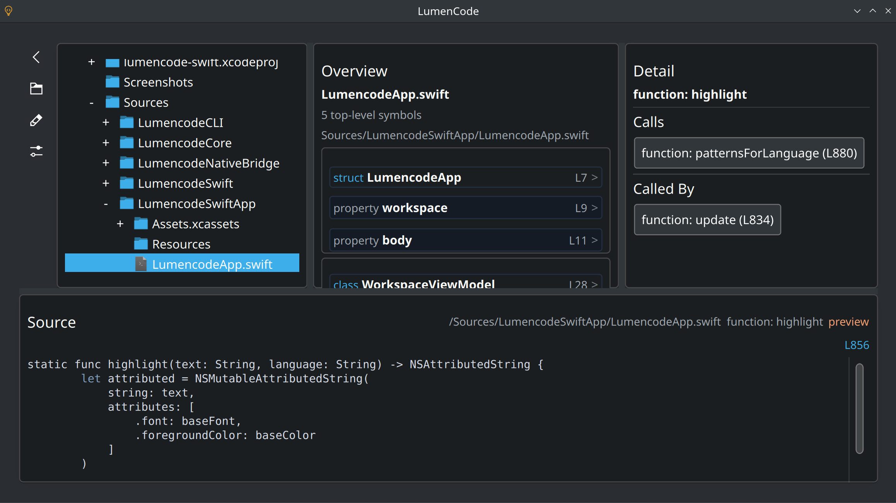

About
LumenCode is a developer tool that focuses on code shape rather than freeform text editing. It reads a filesystem tree, extracts symbols from supported source files, and allows you to drill from folders to files to symbols to member details.
It is intentionally filesystem-aware, parser-assisted, and non-editing.
Technical Specifications
- Languages: PHP, JS, TS, TSX, QML, CSS, HTML, JSON, Python, C/C++, Java, C#, Rust, Swift, and Objective-C.
- Parsers: Tree-sitter integration for most major languages.
- Features: Denser three-pane explorer, syntax-colored snippets, cross-file relation analysis, and crash-isolated background analysis.
Installation
LumenCode is available as a Flatpak repository with one-click URL install, as a standalone bundle, or can be built from source.
Source code is available on GitHub.